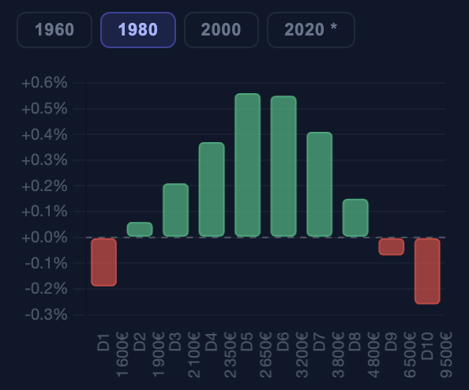

📖 Guide du simulateur
Comprendre le système de retraites français — et les leviers pour l'équilibrer
Vue d'ensemble
Ce simulateur est fondé sur les projections du Conseil d'Orientation des Retraites (COR), l'organisme officiel qui modélise l'avenir financier du système de retraites français. Il vous permet d'explorer ce qui se passerait si on activait différents leviers de réforme : reculer l'âge de départ, modifier les cotisations, changer les règles d'indexation des pensions, etc.
1. Les comptes sont-ils à l'équilibre ? (le système encaisse-t-il autant qu'il dépense ?)
2. Est-ce équitable entre générations et entre niveaux de revenus ? (tout le monde a-t-il un retour proportionnel à ce qu'il a versé ?)
Le simulateur ne prétend pas à une précision absolue — les projections à 50 ans comportent une marge d'incertitude importante. Les résultats sont présentés sur le scénario central du COR (productivité +0,7 %/an, chômage 7 % à long terme) ; les leviers "productivité" et "chômage" permettent d'explorer les variantes. Son objectif est de donner des ordres de grandeur et d'illustrer les tensions entre équilibre financier et justice sociale.
Les indicateurs
Le solde mesure la différence entre ce que le système encaisse (cotisations des actifs) et ce qu'il dépense (pensions des retraités). Il est exprimé en pourcentage du PIB.
Pourquoi le PIB ? Parce qu'un déficit de 60 milliards d'euros n'a pas le même poids si la richesse nationale est de 2 000 ou de 4 000 milliards. Le rapport au PIB permet de comparer dans le temps.
Le scénario de référence COR 2026 prévoit un déficit de −2,4 % du PIB en 2070, soit environ 80 milliards d'euros aux prix d'aujourd'hui. Le système est actuellement proche de l'équilibre mais se dégrade progressivement avec le vieillissement démographique.
Le taux de remplacement mesure combien un retraité perçoit de pension par rapport à son dernier salaire. Un taux de 70 % signifie qu'une personne qui gagnait 2 000 € net touchera 1 400 € de pension.
Il varie fortement selon les revenus :
Le TRI répond à la question : si je traitais mes cotisations comme un placement financier, quel taux d'intérêt annuel obtiendrais-je ?
Il tient compte de tout : ce qu'on verse pendant sa carrière, l'âge auquel on part, et combien on vit à la retraite.
On reçoit nettement moins
qu'on a versé → 0 %
Équilibre : on récupère
exactement ce qu'on a versé → +2 % ou plus
On reçoit plus
qu'on a versé
Un TRI négatif ne signifie pas forcément que le système est injuste — il peut refléter un effort de solidarité voulu (financer les retraites des autres, couvrir les carrières incomplètes, etc.).
D1 commence à travailler jeune (vers 19 ans), a une carrière longue, et une espérance de vie plus courte — le système ne lui est pas très favorable en rendement pur. D10 commence à travailler tard (études longues), vit plus longtemps à la retraite — même avec un taux de remplacement plus faible, son TRI peut être meilleur.
Les leviers macroéconomiques
Ces leviers agissent directement sur l'équilibre financier du système. Leur effet est progressif : les changements structurels mettent des années à se traduire en flux financiers.
Reculer l'âge de départ améliore le solde de deux façons simultanées : les actifs cotisent plus longtemps, et les retraités perçoivent leur pension pendant moins d'années. C'est le levier le plus puissant à court terme, mais il a un coût social : il pénalise les travailleurs ayant commencé jeune et ceux aux métiers pénibles.
Augmenter les cotisations salariales apporte des recettes immédiates au système, mais réduit le salaire net des actifs (moins de pouvoir d'achat). Inversement, les baisser améliore le pouvoir d'achat mais creuse le déficit.
Contrairement aux cotisations salariales, elles ne réduisent pas directement le salaire net — mais elles augmentent le coût du travail pour l'entreprise, ce qui peut peser sur l'emploi ou les salaires à long terme. L'effet sur le solde est donc légèrement amoindri par ces effets indirects.
Actuellement, les pensions sont revalorisées selon l'inflation (les prix). Deux autres options existent :
Désindexation (gel) : les pensions ne bougent plus. Le pouvoir d'achat des retraités s'érode progressivement par rapport aux actifs, mais le système économise. Effet financier croissant avec le temps.
Indexation sur les salaires : les pensions suivent l'évolution du niveau de vie général. Le pouvoir d'achat des retraités est préservé, mais le coût pour le système augmente.
C'est le levier au délai d'action le plus long : un enfant né aujourd'hui n'entrera sur le marché du travail que dans 18 à 22 ans. Son effet sur le solde du système n'est donc visible qu'à partir de 2042–2045. C'est un investissement sur la démographie future, pas une solution à court terme.
Les nouveaux arrivants en âge de travailler cotisent immédiatement, ce qui améliore le solde à court terme. Mais ils vieillissent aussi et prendront leur retraite : l'effet positif se dilue progressivement. La migration est un soutien utile mais limité — elle ne résout pas structurellement le problème du vieillissement.
Une économie plus productive génère des salaires plus élevés, donc des cotisations plus élevées. C'est la principale variable de long terme : une différence de 0,5 point de croissance de la productivité, maintenue pendant 46 ans, change radicalement la situation du système en 2070. Le scénario COR 2026 retient 0,7 %/an — identique au COR 2025.
Un chômage plus faible signifie plus de personnes qui cotisent. L'effet est rapide (quelques années) mais plafonné : on ne peut pas descendre indéfiniment en dessous du "plein emploi". Le scénario central COR retient 7 %, ce qui est déjà inférieur au niveau actuel — une hypothèse volontariste.
Les leviers d'équité : redistribution par décile
Ces deux curseurs permettent de simuler une redistribution des pensions entre niveaux de revenus, en ciblant un taux de rendement souhaité pour chaque décile. Ce n'est pas un levier macroéconomique au sens strict — c'est un choix de société sur la façon de répartir l'effort.
D1 = les 10 % de salariés les moins bien payés · D5 = revenus médians · D10 = les 10 % les mieux payés.
Les curseurs fixent le rendement souhaité pour D1 et D10 ; les déciles intermédiaires sont interpolés.
TRI D1 positif : on garantit aux travailleurs modestes un retour sur cotisations supérieur à zéro. Cela nécessite de verser un complément de pension — un coût pour le système.
TRI D10 négatif : on demande aux hauts revenus d'accepter un rendement inférieur à ce qu'ils auraient "droit" en pur calcul actuariel. Leur pension est volontairement réduite — ce qui génère une économie pour le système. C'est un mécanisme de solidarité explicite.
Le coût net (ou l'économie nette) de cette redistribution est affiché dans le simulateur et intégré au solde global.
Sans redistribution, le graphique du simulateur révèle une inégalité de fait : D1 affiche un TRI négatif (−0,2 % environ), tandis que D5 à D8 sont positifs, et D9–D10 repassent légèrement négatifs.
Pourquoi D1 est-il pénalisé ? Les travailleurs modestes commencent à travailler jeunes, ont des carrières longues — et une espérance de vie plus courte. Résultat : ils cotisent beaucoup, mais touchent leur retraite pendant moins longtemps. En pur calcul financier, le système ne leur est pas favorable.
Pourquoi D9–D10 sont-ils aussi légèrement négatifs ? Malgré une espérance de vie plus longue (qui devrait améliorer leur TRI), leur taux de remplacement est faible (43 % pour D10) car le système plafonne les droits au-delà d'un certain salaire. Ils contribuent donc plus au financement collectif qu'ils ne récupèrent en proportion.
Les déciles D4 à D7 — les salaires intermédiaires — sont les grands bénéficiaires du système actuel en termes de rendement pur.
Les curseurs d'équité permettent de corriger ces déséquilibres en fixant des cibles de rendement différentes : par exemple, garantir un TRI minimum positif à D1, ou demander un effort plus explicite à D10.
Exemple — TRI par décile, génération 1980, scénario de référence (curseurs à zéro)

On peut choisir de corriger ces inégalités en jouant sur les curseurs d'équité. Dans l'exemple ci-dessous, le TRI de D1 a été fixé à +0,55 % et celui de D10 à −0,15 %. Le coût global est neutre pour le système, mais correspond à une baisse de "rentabilité" pour les déciles du milieu, qui financent en partie la redistribution.
Réglage des curseurs

TRI résultant par décile

En réalité, les retraités D1 bénéficient du minimum contributif (MICO), un plancher de pension fixe (~740 €/mois en 2024) qui protège partiellement leur pension des variations macroéconomiques. Le simulateur modélise le TRI de D1 comme proportionnel au salaire, ce qui est une approximation : pour un vrai D1, le MICO "décroche" du salaire et crée un effet de plancher non linéaire. Les dynamiques affichées pour D1 sont donc indicatives — elles capturent la tendance générale mais sous-estiment légèrement la résistance des petites pensions à certains leviers (désindexation notamment).
Comment lire les résultats ?
Le solde en 2070
C'est le chiffre de référence : le déficit (ou excédent) du système en fin de période. Le scénario COR est à −2,4 % du PIB. Tout scénario qui réduit ce chiffre améliore la situation.
Le déficit cumulé 2024–2070
Plus parlant que le seul chiffre de 2070 : c'est l'intégrale du déficit sur toute la période, en % du PIB × années. Il mesure l'effort total à fournir. Le scénario de référence COR correspond à environ −50 points de PIB·années cumulés.
Le message de statut
La banderole en haut du simulateur compare votre scénario au scénario de référence COR. Un score de 100 % signifie que vous avez entièrement résorbé le déficit cumulé. Un score de 50 % signifie que vous en avez éliminé la moitié.
Ce simulateur est un outil pédagogique. Les chiffres sont des ordres de grandeur, pas des prévisions.